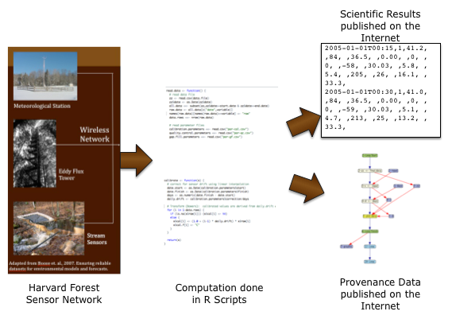

|
Barbara Lerner Elizabeth Fong Mount Holyoke College |
Emery Boose Aaron Ellison Harvard Forest |
Margo Seltzer University of British Columbia |
|
Thomas Pasquier University of Bristol |
Joe Wonsil Carthage College |
Orenna Brand Columbia University |
 In this project, computer scientists from Mount Holyoke College and the University of Britsh Columbia are collaborating with environmental scientists from Harvard Forest to explore how to capture and productively use scientific data provenance.
Scientists routinely collect "factual" data provenance such as who collected the data, where, when, and with what instruments. Increasingly, scientists are using workflow tools, like Kepler, Taverna, and Vistrails, among others, to collect workflow provenance describing how data moves between websites and a variety of tools. However, little work has been done collecting provenance about data analysis steps done within tools that perform potentially complex data analyses and transformations. We are addressing this issue by collecting provenance from the execution of R, a language used widely for statistical analysis and plotting.
The provenance data that we collect are stored in files, along with copies of input and output data and plots, snapshots of intermediate computations and the source of the R scripts that are executed. In addition to archiving the provenance, we are also developing tools that use the provenance to enable a scientist to clean and debug their code and create a virtual machine that allows the exact computation to be reproduced.